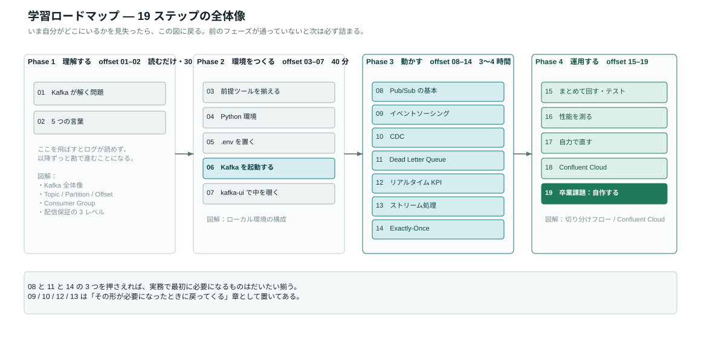
Phase 1 — 理解する
offset 01 — 02 / 読むだけ・30分Kafka が解く問題を言葉にする
このステップのゴール「なぜ API 直接呼び出しではなく Kafka なのか」を、同僚に 1 分で説明できる。
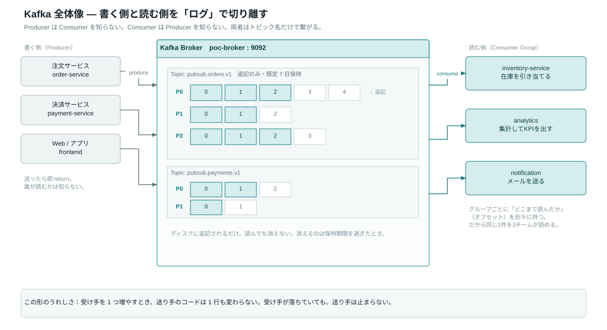
注文サービスが在庫・通知・分析の 3 つに直接 API を叩く構成には、必ず同じ 3 つの問題が出ます。
| API 直接連携の問題 | 何が起きるか | Kafka を挟むと |
|---|---|---|
| 連鎖障害 | 在庫サービスが落ちると注文まで失敗する | メッセージはトピックに残り、復旧後に処理される |
| 密結合 | 受け手が増えるたび注文サービスを改修 | 受け手は勝手に購読を増やせる。送り手は無改修 |
| 流量制御不能 | 処理しきれない量が来ると全体が詰まる | 各サービスが自分のペースで読める |
郵便局のたとえ
Producer はポストに投函する人、Broker は郵便局、Consumer は受け取る人。 投函する人は、誰が何人受け取るのかを知らなくて構いません。これが疎結合の正体です。
- 「Kafka は読んでも消えない」と、その利点を 2 つ言える
- 疎結合・耐障害性・水平スケールの 3 語で Before/After を説明できる
5つの言葉を押さえる
このステップのゴールTopic / Partition / Offset / Consumer Group / Broker を図で説明できる。以降のログ出力が読めるようになる。
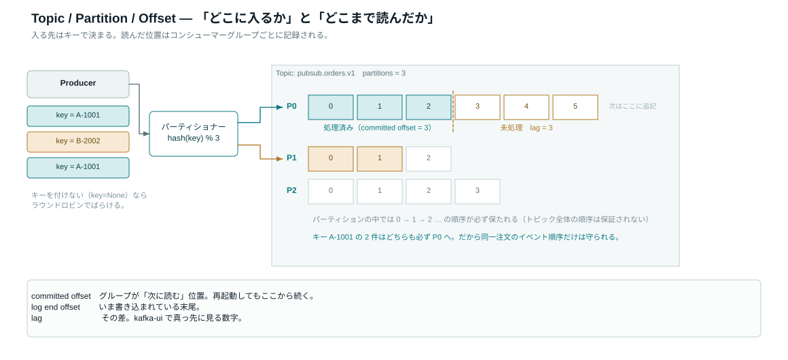
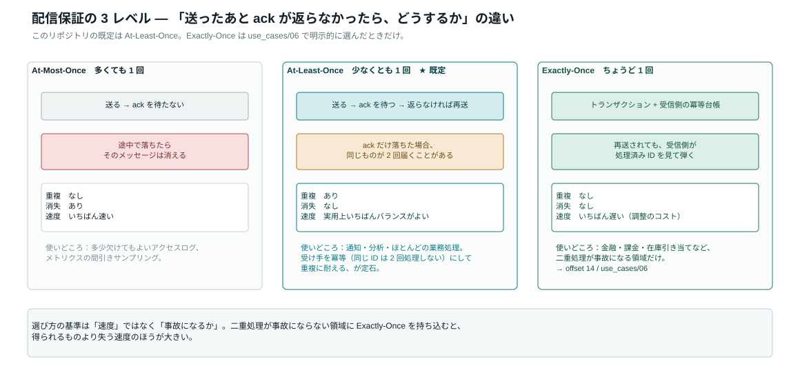
| 言葉 | ひとことで | このリポジトリでの例 |
|---|---|---|
| Topic | メッセージの入れ物。追記のみ、既定 7 日保持 | pubsub.orders.v1 |
| Partition | トピック内の並列レーン。並列度の上限 | 既定 3（DEFAULT_TOPIC_PARTITIONS） |
| Offset | パーティション内の連番。「どこまで読んだか」を記録 | 再起動しても続きから読める |
| Consumer Group | 同じグループ = 分担、違うグループ = 全員が全件受信 | --group で切り替え（08） |
| Broker | Kafka サーバー本体 | Docker で 1 台（poc-broker） |
配信保証の3レベル
| レベル | 重複 | 消失 | 使いどころ |
|---|---|---|---|
| At-Most-Once | なし | あり | 多少欠けてもよいログ |
| At-Least-Once （既定） | あり | なし | 通知・分析。受け手を冪等にして対処 |
| Exactly-Once | なし | なし | 金融・課金・在庫（→ offset 14） |
- 「パーティション数より多いコンシューマーを起動すると何が起きるか」に答えられる
- グループ名を変えると読み直しになる理由を説明できる
Phase 2 — 環境をつくる
offset 03 — 07 / 手を動かす・40分前提ツールを揃える
このステップのゴール4 つのコマンドがすべてバージョンを返す状態にする。ここを飛ばすと 06 で必ず詰まります。
docker --version
docker compose version
python --version
git --versionDocker version 24.0.6, build ed223bc Docker Compose version v2.23.0 Python 3.11.9 git version 2.42.0
| ツール | 最低バージョン | 入手先 |
|---|---|---|
| Docker Desktop | 24.0+ | docker.com |
| Python | 3.11+ | python.org / pyenv |
| Git | 2.x | OS 標準 / git-scm.com |
python コマンドが見つからない / 3.11 未満だった
python がない場合は python3 を試してください。以降のコマンドもすべて python3 に読み替えます。
brew install pyenv
pyenv install 3.11.9
pyenv local 3.11.9
python --versionリポジトリを取得して Python 環境をつくる
このステップのゴールimport confluent_kafka がエラーなく通る状態にする。
# 1. 取得（すでに手元にあるならこの2行は不要）
git clone <このリポジトリの URL> confluent-kafka-poc
cd confluent-kafka-poc
# 2. 仮想環境（推奨。プロジェクト外を汚さない）
python -m venv .venv
source .venv/bin/activate # Windows: .venv\Scripts\activate
# 3. 依存をインストール
pip install -r requirements.txt$ python -c "import confluent_kafka; print(confluent_kafka.version())"
('2.x.x', 33554688)
| パッケージ | 役割 | 使う場所 |
|---|---|---|
| confluent-kafka | Kafka クライアント本体（C ライブラリ librdkafka のバインディング） | 全ユースケース |
| pydantic-settings | .env を型付きで読み込む | core/config.py |
| rich | コンソールの表・ライブ更新表示 | offset 12 のダッシュボード |
ModuleNotFoundError: No module named 'confluent_kafka'
pip が別の Python を指している典型例です。pip --version の末尾に表示されるパスが、python --version で使っている Python と一致しているか確認してください。
python -m pip install -r requirements.txt接続設定を .env に置く
このステップのゴール接続先がコードのどこにもハードコードされていない仕組みを理解し、設定値を自分で読めるようにする。
cp .env.tpl .env
python -m core.configKAFKA_ENV = local
bootstrap.servers = localhost:9092
schema.registry.url = http://localhost:8081
security.protocol = PLAINTEXT
cloud? = False
producer_config = {'bootstrap.servers': 'localhost:9092', ...}
ローカル開発なら .env は書き換え不要です。値は「実際の環境変数 → .env → .env.local → コード内の既定値」の順で解決されます。
| 変数 | 既定値 | 意味 |
|---|---|---|
| KAFKA_ENV | local | local（Docker）か confluent（Cloud）か |
| KAFKA_BOOTSTRAP_SERVERS | localhost:9092 | 最初に問い合わせるブローカー |
| KAFKA_GROUP_ID | confluent-kafka-poc-group | コンシューマーグループの既定名 |
| KAFKA_AUTO_OFFSET_RESET | earliest | 初見のグループがどこから読むか |
| DEFAULT_TOPIC_PARTITIONS | 3 | 自動作成されるトピックの並列度 |
| DEFAULT_TOPIC_REPLICATION | 1 | ローカルはブローカー 1 台なので 1 |
Kafka を起動する
このステップのゴール./scripts/start.sh が「Kafka is ready」まで到達し、UI の URL が表示される。
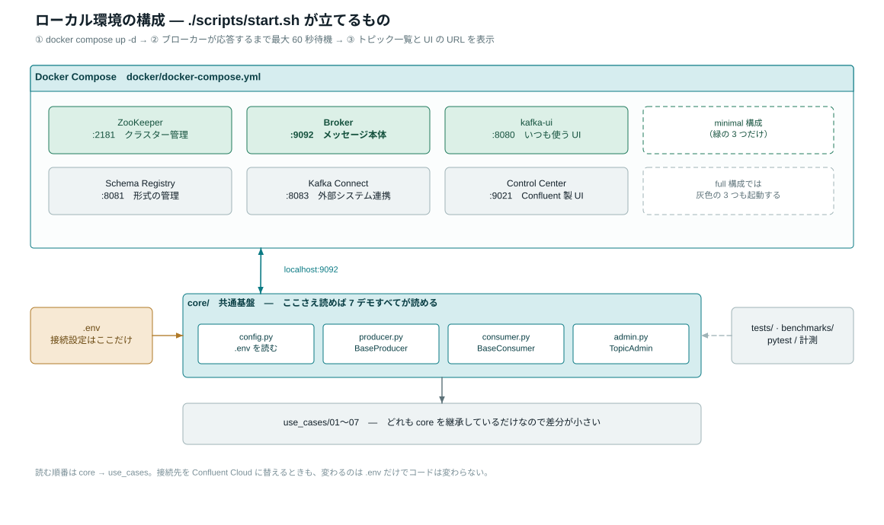
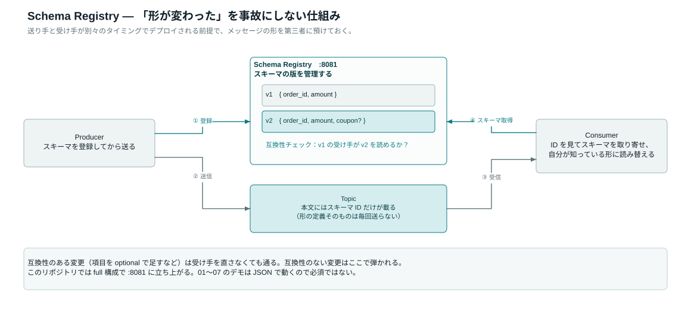
# フル構成（Schema Registry / Connect / Control Center 込み）
./scripts/start.sh
# マシンが非力なら最小構成（ZooKeeper + Broker + kafka-ui のみ）
./scripts/start.sh minimalスクリプトは ① docker compose up -d → ② ブローカーが kafka-topics --list に応答するまで最大 60 秒待機 → ③ トピック一覧と UI の URL を表示、の 3 段階で動きます。単に起動するだけでなく「実際に応答できるか」まで確認するので、ここが通れば以降の接続エラーはほぼ起きません。
==> Kafka is ready. Current topics:
__consumer_offsets
==> UIs:
kafka-ui : http://localhost:8080
Control Center : http://localhost:9021
Schema Registry : http://localhost:8081
Kafka Connect : http://localhost:8083
Bootstrap servers: localhost:9092
Done. Try: python use_cases/01_basic_pubsub/consumer.py
止める・やり直す
./scripts/stop.sh # 停止する（トピックのデータは残る）
./scripts/reset.sh # 停止してデータも全削除（実験をやり直したいとき）port is already allocated / Cannot connect to the Docker daemon
Docker daemon のエラーなら Docker Desktop が未起動です。起動してから再実行してください。
ポート競合なら、9092 を別のプロセスが使っています。
./scripts/stop.sh && ./scripts/start.sh
lsof -i :9092 # それでもダメなら誰が掴んでいるか確認60 秒たっても ready にならない
初回はイメージのダウンロードで時間がかかります。まずコンテナの状態を見ます。
docker ps
docker compose -f docker/docker-compose.yml logs broker --tail 50全コンテナが Up になってから ./scripts/start.sh を再実行すれば、ヘルスチェックだけやり直せます。
kafka-ui で中を覗く
このステップのゴール「メッセージ・オフセット・コンシューマーグループの遅れ（lag）」を UI で確認できるようにする。以降のステップで毎回ここに戻ります。
| URL | 何を見る | 使用頻度 |
|---|---|---|
| localhost:8080 kafka-ui | トピック / メッセージ / コンシューマーの lag | 毎回 |
| localhost:9021 Control Center | Confluent 純正の運用ダッシュボード | たまに |
| localhost:8081 Schema Registry | スキーマの登録状況（本 PoC は JSON 直送のため未使用） | offset 19 で |
最低限おぼえる3画面
- Topics → トピックを選ぶ → Messages タブ。実データ・オフセット・タイムスタンプが見えます。
- Topics → Settings タブ。パーティション数と保持期間はここ。
- Consumers。グループごとの現在オフセットと lag。lag が減らない = 処理が追いついていない、のサインです。
- kafka-ui が開き、右上のクラスター名が local になっている
- Topics / Consumers の 2 タブの場所を覚えた
Phase 3 — 動かす
offset 08 — 14 / 7ユースケース・3〜4時間Pub/Sub の基本 — メッセージが流れる感覚をつかむ
このステップのゴールコンシューマーグループの挙動（分担と fan-out）を、自分の手で再現できる。
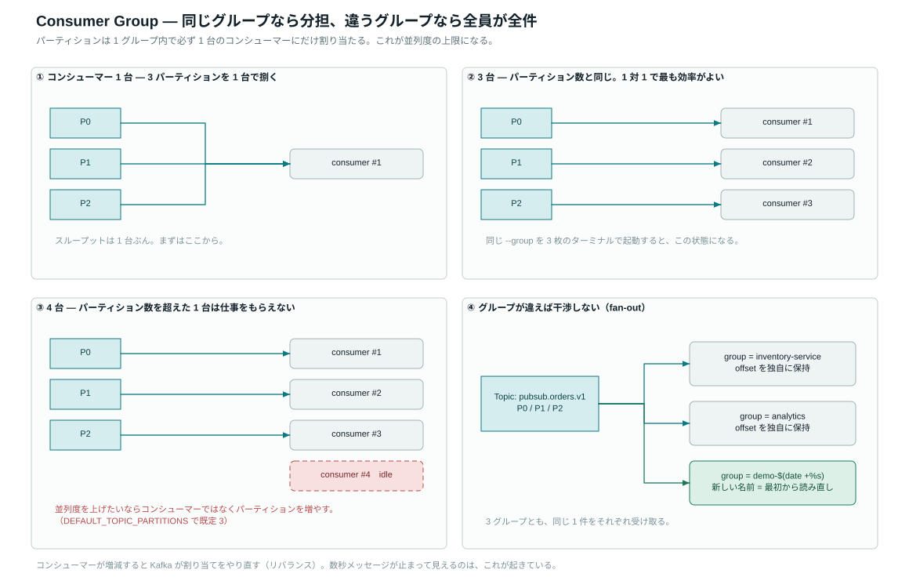
トピック pubsub.orders.v1 に注文イベントを流し、別グループで受け取ります。先にコンシューマーを起動してください。
python use_cases/01_basic_pubsub/consumer.pypython use_cases/01_basic_pubsub/producer.py --count 10 --interval 0.5B: Produced: order_id=abc123, item=laptop, price=98000 A: Received: order_id=abc123, item=laptop, price=98000 ← ほぼ同時に A に出る
実験1 — fan-out（違うグループは全員が全件受け取る）
python use_cases/01_basic_pubsub/consumer.py --group another-groupKAFKA_AUTO_OFFSET_RESET=earliest なので、新しいグループは過去のメッセージを最初から読み直します。これが「読んでも消えない」の実物です。
実験2 — 分担（同じグループを増やすとパーティションを分け合う）
python use_cases/01_basic_pubsub/consumer.py --group test-scale同じコマンドを 3 枚のターミナルで起動すると、パーティション 0/1/2 が 1 つずつ割り当たります。 4 枚目を起動すると、そのプロセスは何も受け取りません（パーティション数が並列度の上限）。
実験3 — 溜めてから読む
コンシューマーを全部止めた状態でプロデューサーだけ動かし、あとからコンシューマーを起動してください。溜まった分が一気に流れます。kafka-ui の Consumers タブで lag が跳ね上がってから 0 に戻る様子が見えます。
- 違うグループ名にすると全件読み直しになることを確認した
- 同じグループを 4 つ起動すると 1 つが遊ぶことを確認した
- kafka-ui の Consumers タブで lag の増減を見た
コンシューマーが無反応 / 止め方がわからない
メッセージ待ちのループなので、何も表示されないのは正常です。別ターミナルでプロデューサーを動かしてください。
停止は、そのターミナルで Ctrl + C。ターミナルを閉じてしまった場合は ./scripts/stop.sh で Kafka ごと止めれば、コンシューマーも終了します。
イベントソーシング — 状態ではなく履歴を保存する
このステップのゴール「現在の状態はイベントを畳み込んだ結果にすぎない」を、リプレイで体感する。
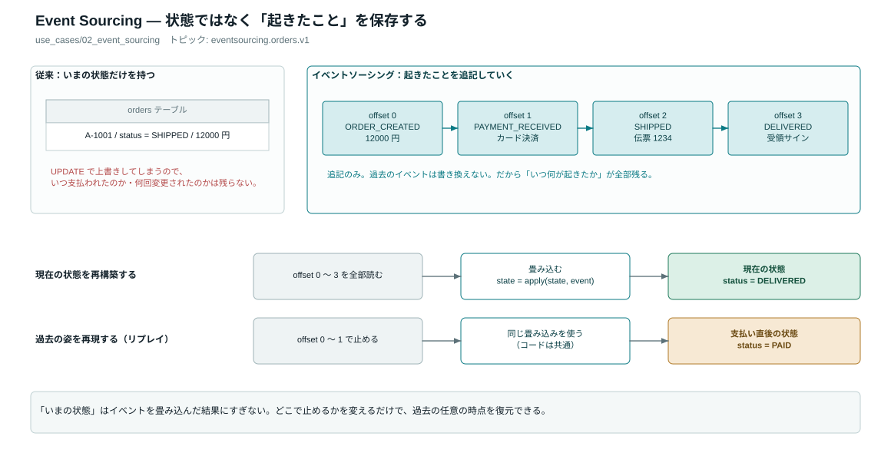
トピック eventsourcing.orders.v1 に ORDER_CREATED → PAYMENT_RECEIVED → SHIPPED のようなイベントを追記し、状態はそこから再構築します。RDB が「今の値」を UPDATE で潰すのに対し、こちらは何も失われません。
python use_cases/02_event_sourcing/event_store.py
# 特定の注文だけ再構築して表示する
python use_cases/02_event_sourcing/event_store.py --aggregate <order_id># 全イベントを畳み込み直す
python use_cases/02_event_sourcing/replay.py
# 指定時刻以降のイベントだけで再構築する
python use_cases/02_event_sourcing/replay.py --since 2026-01-01T00:00:00
# 「もし支払いイベントが無かったら？」を試す
python use_cases/02_event_sourcing/replay.py --whatif drop-payments- --whatif drop-payments で最終状態が変わることを確認した
- 何度 replay しても同じ結果になる（決定的である）ことを確認した
- kafka-ui で eventsourcing.orders.v1 のメッセージを実際に見た
CDC — DB の変更を別システムに届ける
このステップのゴールDebezium 形式（op / before / after）のイベントを読んで、レプリカが追従する様子を確認する。
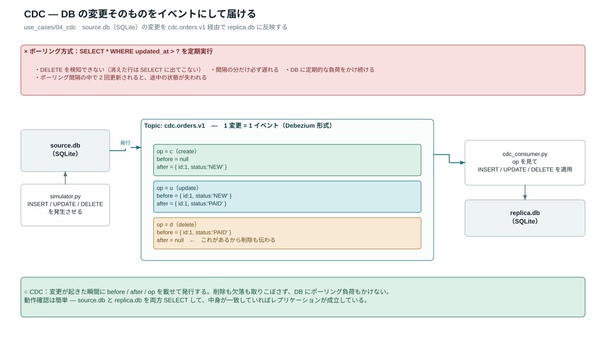
DB を定期的に polling して差分を取る方式には、削除を検知できないという致命的な穴があります。CDC は変更が起きた瞬間にイベントを発行するので、INSERT / UPDATE / DELETE がすべて等しく流れます。
python use_cases/04_cdc/cdc_consumer.pypython use_cases/04_cdc/simulator.py --changes 20{ "op": "c", "before": null, "after": {"id": 1, "status": "pending"} }
{ "op": "u", "before": {"status": "pending"}, "after": {"id": 1, "status": "shipped"} }
{ "op": "d", "before": {"id": 1, ...}, "after": null }
simulator.py が source.db（SQLite）を書き換え、cdc_consumer.py が replica.db に反映します。両方のファイルを比べれば、レプリケーションが成立していることを確認できます。
- op が c → u → d と遷移するのを確認した
- 削除（op: "d"）もレプリカに伝わることを確認した
- 本番では Debezium + Kafka Connect（:8083）が同じ形式のイベントを出す、と理解した
Dead Letter Queue — 壊れた1件で全体を止めない
このステップのゴール本番で最初に必要になるエラー処理パターンを、失敗を注入して動かす。
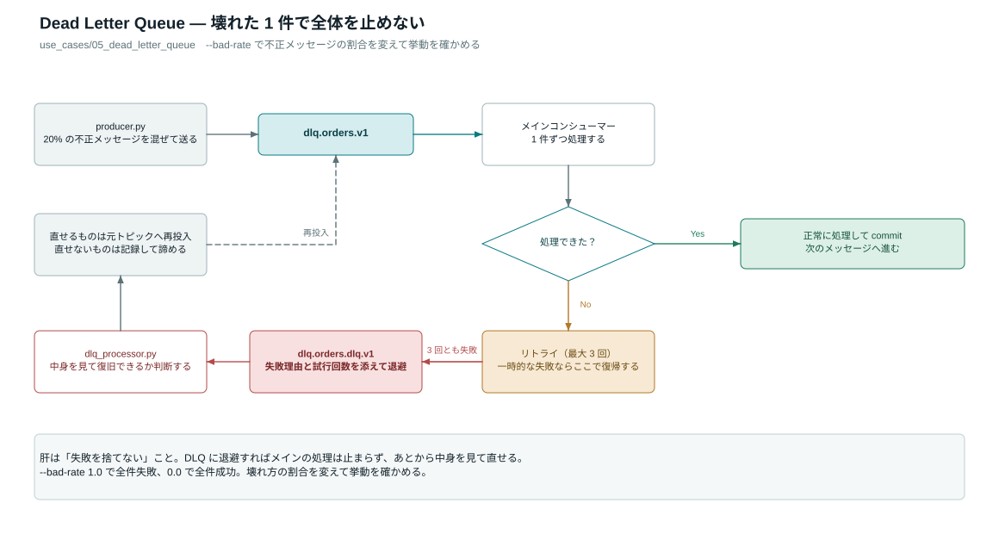
外から来るデータは必ず壊れます。壊れた 1 件で例外を投げて落ちると、その後ろの正常なメッセージがすべて止まります。DLQ は不正メッセージを別トピックに退避して、本流を止めない仕組みです。
python use_cases/05_dead_letter_queue/consumer.pypython use_cases/05_dead_letter_queue/dlq_processor.pypython use_cases/05_dead_letter_queue/producer.py --count 50 --bad-rate 0.2| トピック | 役割 |
|---|---|
| dlq.orders.v1 | 本流。正常・不正が混ざって届く |
| dlq.orders.dlq.v1 | 退避先。失敗理由つきで溜まる |
--bad-rate 1.0 にすれば全件失敗、0.0 なら全件成功。壊れ方の割合を変えて挙動を確かめてください。
- メインコンシューマーが停止しないことを確認した
- DLQ トピックに不正メッセージが入るのを kafka-ui で見た
- 再投入されたメッセージが再び本流で処理されるのを追えた
リアルタイム KPI — 「今この瞬間」を出す
このステップのゴール生イベント → 集計 → ダッシュボードという 3 段のパイプラインを、トピックでつなぐ感覚をつかむ。
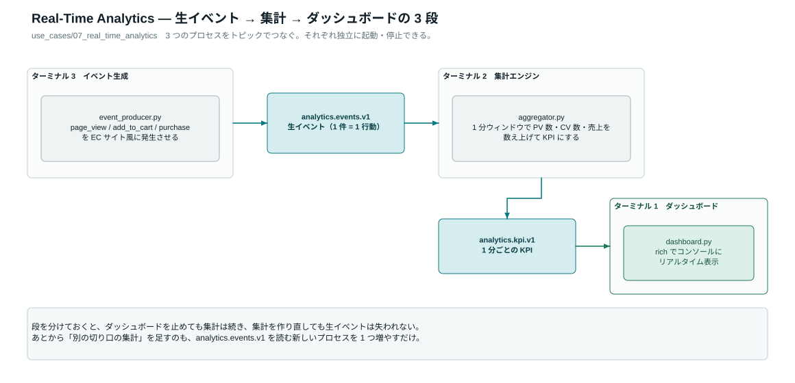
event_generator ──> analytics.events.v1 ──> aggregator (1分窓) ──> analytics.kpi_1m.v1 ──> dashboard
python use_cases/07_real_time_analytics/dashboard.pypython use_cases/07_real_time_analytics/aggregator.pypython use_cases/07_real_time_analytics/event_generator.py --rate 20
# 負荷を上げてみる（秒間100件・500件で終了）
python use_cases/07_real_time_analytics/event_generator.py --rate 100 --count 500📊 Real-Time Analytics Page views : 1,423 Purchases : 89 GMV : ¥1,234,500 CVR : 6.3% Events/sec : 48.2
- --rate を変えると Events/sec が追従することを確認した
- ダッシュボードだけ Ctrl+C で落として再起動し、KPI が復帰することを確認した
ストリーム処理 — 集計・変換・結合
このステップのゴールウィンドウ集計・フィルタ変換・ストリーム結合という 3 つの型を動かし、使い分けを言えるようにする。
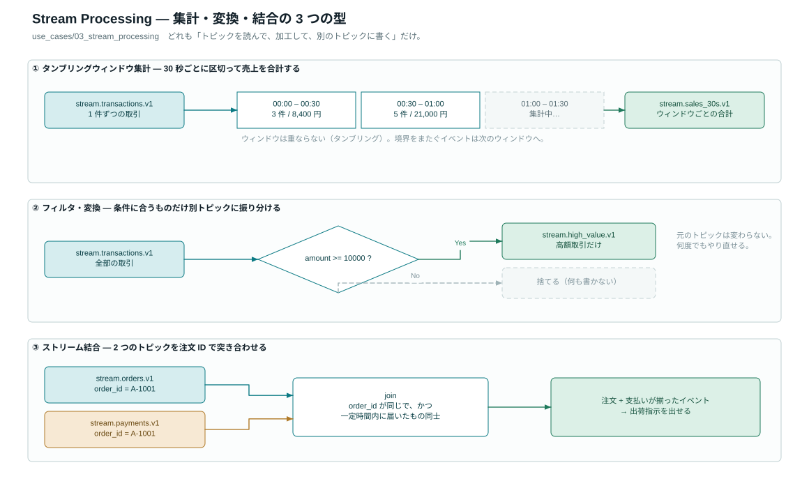
① タンブリングウィンドウ集計
30 秒ごとに区切って売上を合計します。stream.transactions.v1 を読み、stream.sales_30s.v1 に書きます。
python use_cases/03_stream_processing/filter_transform.py --produce 300python use_cases/03_stream_processing/aggregator.py
python use_cases/03_stream_processing/aggregator.py --window 10② フィルタ・変換
引数なしで起動すると常駐し、高額取引だけを stream.high_value.v1 に振り分けます。
python use_cases/03_stream_processing/filter_transform.py③ ストリーム結合（注文 × 支払い）
--produce N でサンプル生成、引数なしで結合処理が動きます。 支払いは約 9 割しか発生しないので、結合されずに残る注文が出ます。これが実務で「未払い検知」になります。
python use_cases/03_stream_processing/stream_join.py --produce 100python use_cases/03_stream_processing/stream_join.py| 入力トピック | 処理 | 出力トピック |
|---|---|---|
| stream.transactions.v1 | 30 秒タンブリング集計 | stream.sales_30s.v1 |
| stream.transactions.v1 | 高額のみ抽出・変換 | stream.high_value.v1 |
| stream.order_events.v1 + stream.payment_events.v1 | ウィンドウ結合 | stream.order_payment_joined.v1 |
- 窓幅を変えると集計の粒度が変わることを確認した
- 結合されずに残る注文が出ることを確認した
- 3 つの型（集計 / 変換 / 結合）を使い分ける基準を言える
Exactly-Once — 二重処理を絶対に起こさない
このステップのゴールEOS が「送信側のトランザクション」と「受信側の冪等性」の両輪であることを、失敗注入で確かめる。
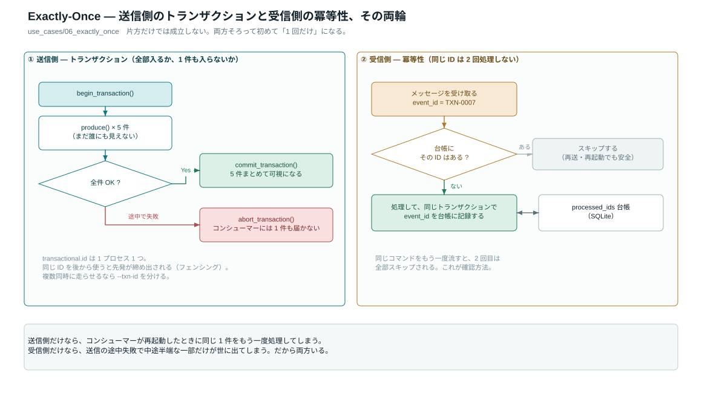
python use_cases/06_exactly_once/idempotent_consumer.pypython use_cases/06_exactly_once/transactional_producer.py --batch 5python use_cases/06_exactly_once/transactional_producer.py --batch 5 --fail受信側の冪等性
コンシューマーは処理済み ID を SQLite の台帳に記録し、2 回目以降を読み飛ばします。同じコマンドをもう一度流して、 ログに「skip」が出ることを確認してください。台帳の場所は --db で変えられます。
transactional.id 関連のエラーが出る
前回の実験のトランザクション状態が残っている可能性があります。リセットしてやり直してください。
./scripts/reset.sh && ./scripts/start.sh複数プロセスを同時に走らせたい場合は --txn-id を分けてください（同じ ID は後発が先発を締め出す＝フェンシング仕様です）。
- --fail で 1 件も届かないことを確認した
- 同じバッチを再送しても二重処理されないことを確認した
- EOS を使う／使わない判断基準を自分の言葉で言える
Phase 4 — 運用する
offset 15 — 19 / 独力で回せるようになるまとめて回す・テストする
このステップのゴール環境が壊れていないことを 1 コマンドで確認できるようにする。以降、何か変えたら毎回これを回します。
./scripts/run_all_demos.sh各デモを有限件数・時間上限つきで順に実行し、自動で終了します。ブローカーに到達できなければ最初に落ちるので、環境の一次切り分けにも使えます。
pytest tests/ -v
# 落ちたテストだけ詳しく見る
pytest tests/test_core_producer.py -v- run_all_demos.sh が ALL DEMOS COMPLETE まで到達した
- pytest tests/ -v が全件パスした
性能を測る — 「速い」を数字で言う
このステップのゴールスループットとレイテンシを自分の環境で実測し、設定を変えたときの差を説明できる。
python benchmarks/throughput_producer.py --count 100000
python benchmarks/throughput_consumer.py --count 100000
# 送信側のチューニングパラメータを振って比較する
python benchmarks/throughput_producer.py --sweeppython benchmarks/latency_test.py --count 2000 --rate 200
python benchmarks/report.py # 結果を Markdown レポートに| 見る指標 | 意味 | 悪化したときに疑うこと |
|---|---|---|
| msg/sec | 単位時間あたりの処理件数 | バッチ設定（linger.ms）、圧縮、パーティション数 |
| P50 | 半数がこの時間以内に届く | 平常時の実力。ここが遅いなら構成の問題 |
| P99 | 最も遅い 1% の水準 | ユーザー体感はここで決まる。GC・ディスク・リバランス |
- 自分の環境の msg/sec と P50/P95/P99 を記録した
- --sweep でパラメータによる差が出ることを確認した
- offset 14 の EOS 有無で数字が変わることを確かめた
壊れたときに自力で直す
このステップのゴールエラーメッセージから原因の当たりをつけ、切り分けコマンドを手が覚えている状態にする。
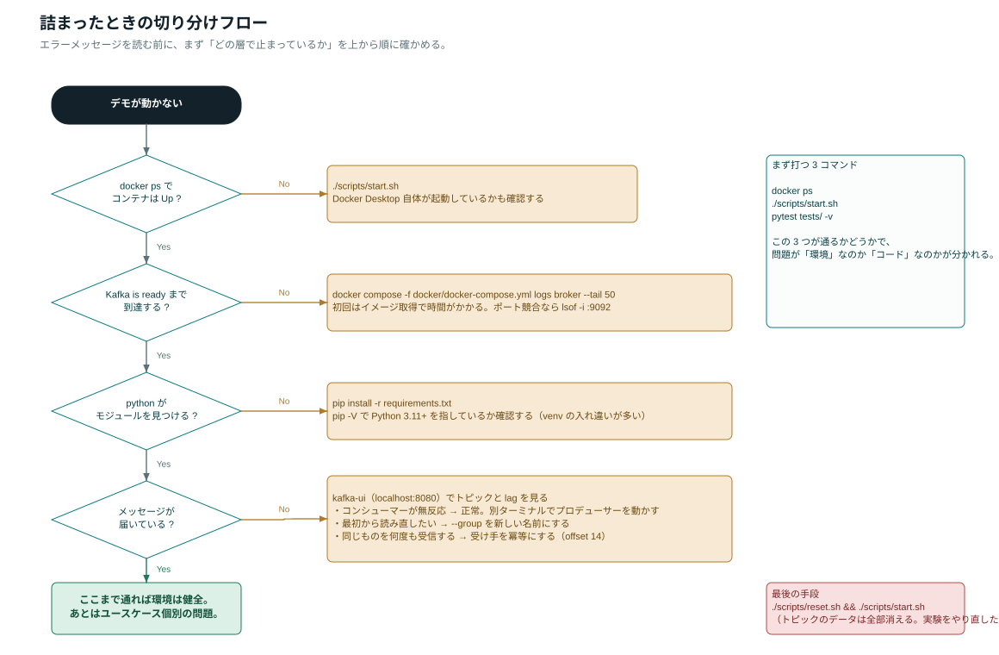
まず打つ3コマンド
docker ps # 全コンテナが Up か
docker logs poc-broker --tail 50 # ブローカーのログ
python -m core.config # どこに繋ぎに行っているか./scripts/start.sh minimal で起動した場合、ブローカーのコンテナ名は poc-broker-min です。
症状別
Failed to resolve 'localhost:9092' / Connection refused
ブローカーが起動していないか、まだ応答できていません。./scripts/start.sh を実行し、 「Kafka is ready」まで出るのを待ってください。すでに起動済みなら docker ps で全コンテナが Up か確認します。
ModuleNotFoundError（confluent_kafka / pydantic_settings / rich）
仮想環境を有効化し忘れているか、pip が別の Python を指しています。
source .venv/bin/activate
python -m pip install -r requirements.txtTopic 'xxx' already exists
無視して構いません。TopicAdmin.ensure_topic_exists() は冪等（存在すればスキップ）に作られています。 完全にやり直したい場合のみ ./scripts/reset.sh && ./scripts/start.sh。
同じメッセージを何度も受信してしまう
グループ名を変えた（＝新しいグループ扱い）か、初回起動です。KAFKA_AUTO_OFFSET_RESET=earliest のため最初から読みます。 続きから読みたいなら同じ --group 名を使ってください。
kafka-ui にメッセージが出てこない
① ブラウザをリロード ② Topics の Refresh ③ トピック名の綴り（pubsub.orders.v1 など） ④ 右上のクラスターが local か、の順に確認します。
reset したのにデータが残っている
./scripts/reset.sh && ./scripts/start.shSQLite を使うユースケース（04 の source.db / replica.db、06 の台帳）は Kafka の外にあるので、必要ならファイルごと消してください。
Confluent Cloud に切り替える
このステップのゴールローカル Docker とマネージドサービスの差が「接続設定だけ」であることを、実際の設定で理解する。
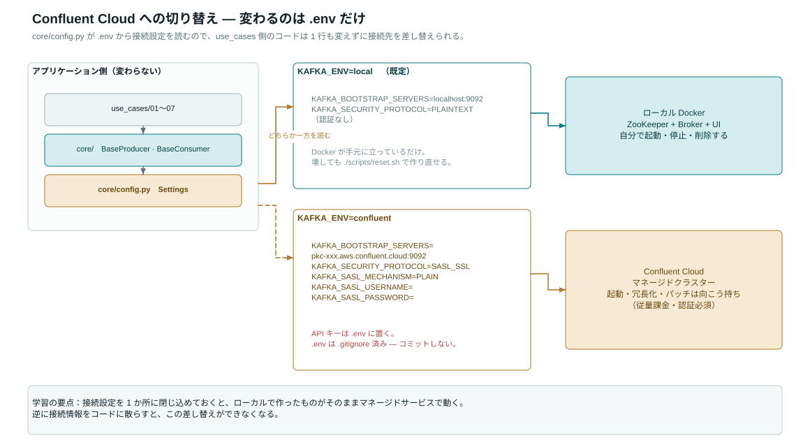
コードの変更は 0 行です。.env を書き換えるだけで、同じデモがクラウド上のクラスターに繋がります。
KAFKA_ENV=confluent
KAFKA_BOOTSTRAP_SERVERS=pkc-xxxxx.us-east-1.aws.confluent.cloud:9092
KAFKA_SECURITY_PROTOCOL=SASL_SSL
KAFKA_SASL_MECHANISM=PLAIN
KAFKA_SASL_USERNAME=<CLUSTER_API_KEY>
KAFKA_SASL_PASSWORD=<CLUSTER_API_SECRET>
SCHEMA_REGISTRY_URL=https://psrc-xxxxx.confluent.cloud
SCHEMA_REGISTRY_API_KEY=<SR_KEY>
SCHEMA_REGISTRY_API_SECRET=<SR_SECRET>python -m core.config # cloud? = True になれば成功② 秘密情報の置き場所：API キー／シークレットは git 管理外の .env にのみ書きます。 .env.tpl と .env.local はコミットされるので絶対に入れないこと。
卒業課題 — 自分のユースケースを追加する
このステップのゴールここまでの資材を使って、自分の業務に近い検証を自力で 1 本立ち上げる。
1. 雛形を作る
mkdir -p use_cases/08_my_use_case
touch use_cases/08_my_use_case/README.md
touch use_cases/08_my_use_case/producer.py
touch use_cases/08_my_use_case/consumer.py2. core を継承する
import sys
from pathlib import Path
sys.path.insert(0, str(Path(__file__).resolve().parents[2]))
from core import BaseProducer, TopicAdmin, configure_logging
TOPIC = "myusecase.orders.v1" # {usecase}.{entity}.{version}
def main() -> None:
configure_logging()
TopicAdmin().ensure_topic_exists(TOPIC)
producer = BaseProducer(default_topic=TOPIC)
producer.produce(value={"hello": "kafka"}, key="demo-1")
producer.flush()
if __name__ == "__main__":
main()3. 動作を確認する
python use_cases/08_my_use_case/producer.py
pytest tests/ -v- 新しいトピックが kafka-ui に現れた
- README に「何を検証したいのか」を 3 行で書いた
- pytest が全件パスしたままである
- この PoC で何が確かめられ、何が確かめられないかを言語化した
付録
コマンド・チートシート
| やりたいこと | コマンド |
|---|---|
| 起動（フル / 最小） | ./scripts/start.sh / ./scripts/start.sh minimal |
| 停止（データは残す） | ./scripts/stop.sh |
| 全消しでやり直す | ./scripts/reset.sh && ./scripts/start.sh |
| 全デモを通しで実行 | ./scripts/run_all_demos.sh |
| テスト | pytest tests/ -v |
| 設定の確認 | python -m core.config |
| ブローカーのログ | docker logs poc-broker --tail 50 |
| コンテナの状態 | docker ps -a |
トピック早見表
| トピック | どこで使う |
|---|---|
| pubsub.orders.v1 | offset 08 — Pub/Sub |
| eventsourcing.orders.v1 | offset 09 — イベントソーシング |
| cdc.orders.v1 | offset 10 — CDC |
| dlq.orders.v1 / dlq.orders.dlq.v1 | offset 11 — DLQ |
| analytics.events.v1 / analytics.kpi_1m.v1 | offset 12 — リアルタイム分析 |
| stream.transactions.v1 / stream.sales_30s.v1 / stream.high_value.v1 | offset 13 — 集計・変換 |
| stream.order_events.v1 / stream.payment_events.v1 / stream.order_payment_joined.v1 | offset 13 — 結合 |
| eos.transfers.v1 | offset 14 — Exactly-Once |
| bench.throughput.v1 / bench.latency.v1 | offset 16 — ベンチマーク |
用語集
- lag
- 最新オフセットと、コンシューマーがコミット済みのオフセットの差。処理の遅れ。
- rebalance
- グループのメンバーが増減したときに、パーティションの担当を割り当て直すこと。
- tombstone
- 値が null のメッセージ。compact トピックで「このキーを削除」を意味する。
- idempotence
- 冪等性。同じ操作を何度実行しても結果が変わらない性質。
- tumbling window
- 重ならない固定長の時間窓。30 秒窓なら 0-30 秒、30-60 秒…と区切る。
- fencing
- 同じ transactional.id を持つ古いプロデューサーを締め出し、二重書き込みを防ぐ仕組み。
リポジトリ内の関連ドキュメント
| ファイル | 内容 |
|---|---|
| docs/kafka-concepts.md | 基本概念の詳細（本サイト offset 01-02 の元資料） |
| docs/getting-started.md | 環境構築の詳細手順（offset 03-07） |
| docs/use-cases-guide.md | 7 ユースケースの解説（offset 08-14） |
| docs/troubleshooting.md | エラー事典（offset 17） |
| docs/architecture.drawio | 構成図のソース（draw.io で開く） |